shopcarbon.com — Carbon Assist verification
Generated 2026-03-27T06:46:11.759Z · https://shopcarbon.com/
Mobile (closed)
script src: https://app.shopcarbon.com/accessibility/widget?scope=default&wrev=126
__carbonA11yRev: 126
body filter: (none)
Mobile (after reset)
script src: https://app.shopcarbon.com/accessibility/widget?scope=default&wrev=126
__carbonA11yRev: 126
body filter: (none)
Desktop (closed)
script src: https://app.shopcarbon.com/accessibility/widget?scope=default&wrev=126
__carbonA11yRev: 126
body filter: (none)
Desktop (after reset)
script src: https://app.shopcarbon.com/accessibility/widget?scope=default&wrev=126
__carbonA11yRev: 126
body filter: (none)
Mobile: Home (launcher closed) — Storefront before opening panel
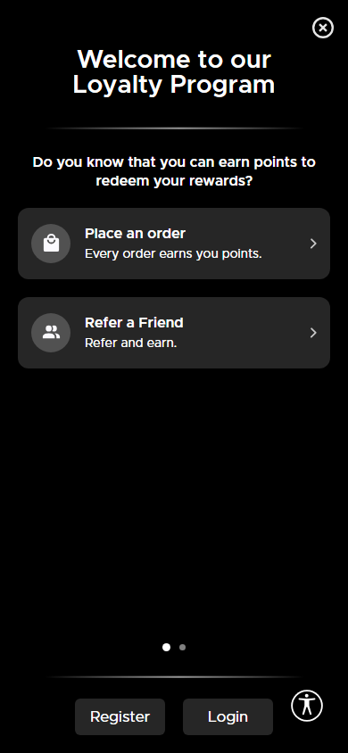
Mobile: Panel open — Assist panel expanded
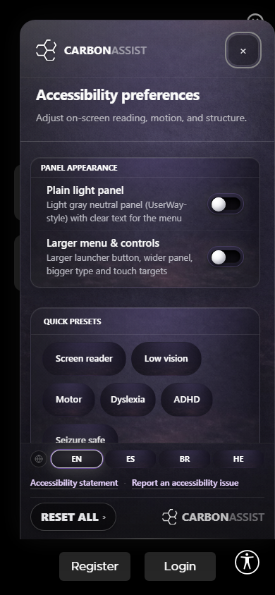
Mobile: Contrast — none — Radio activated
 Mobile: Contrast — dark — Radio activated
Mobile: Contrast — dark — Radio activated
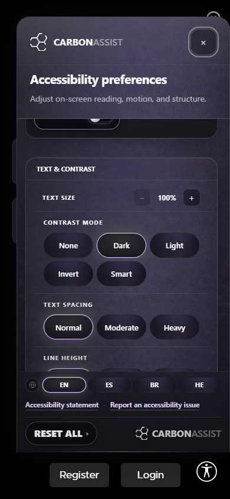
Mobile: Contrast — light — Radio activated
Mobile: Contrast — invert — Radio activated
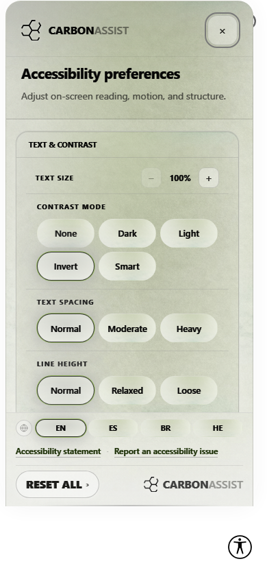
Mobile: Contrast — smart — Radio activated
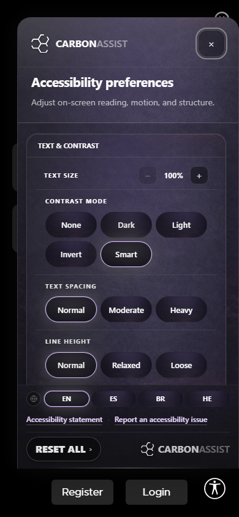
Mobile: Contrast reset (none) — Back to none
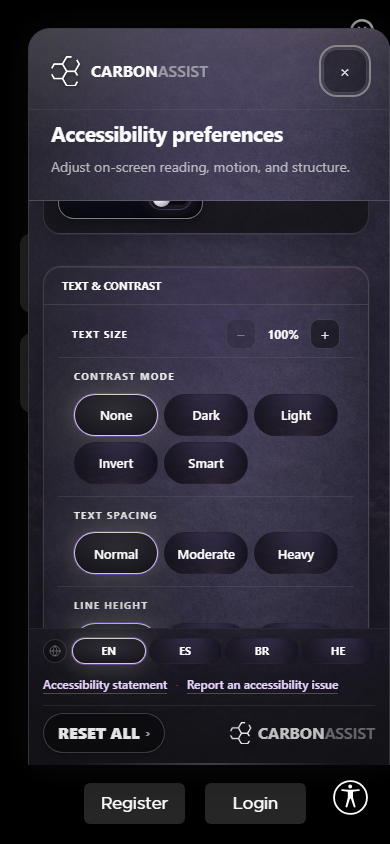
Desktop: Home (launcher closed) — Storefront before opening panel
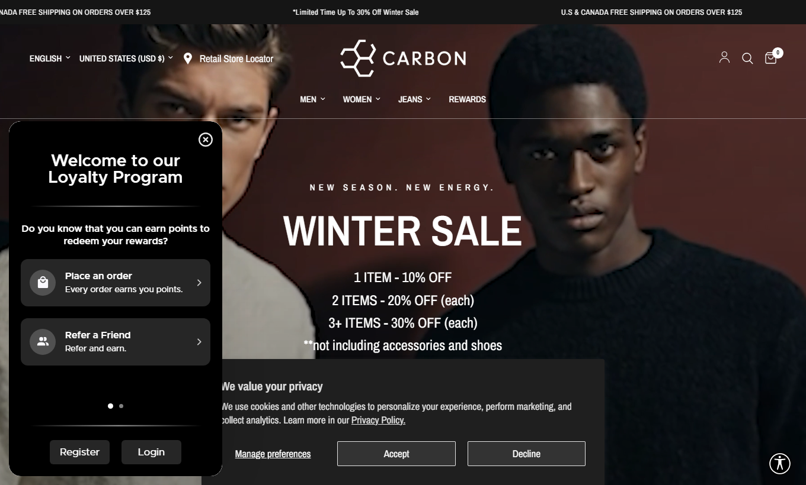
Desktop: Panel open — Assist panel expanded
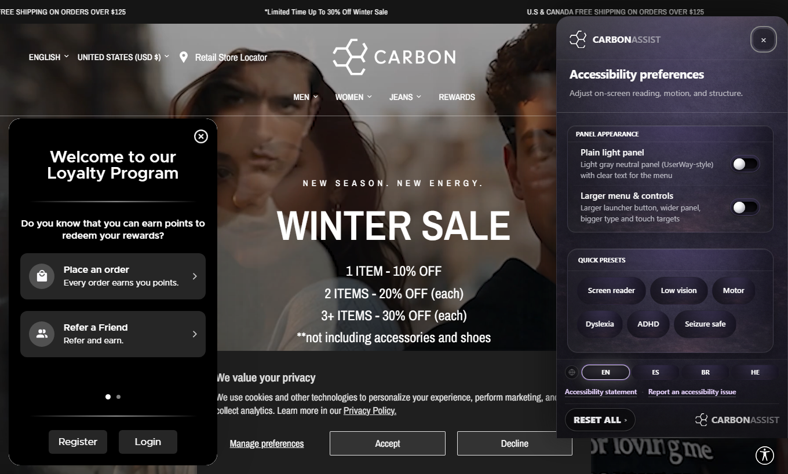
Desktop: Contrast — none — Radio activated
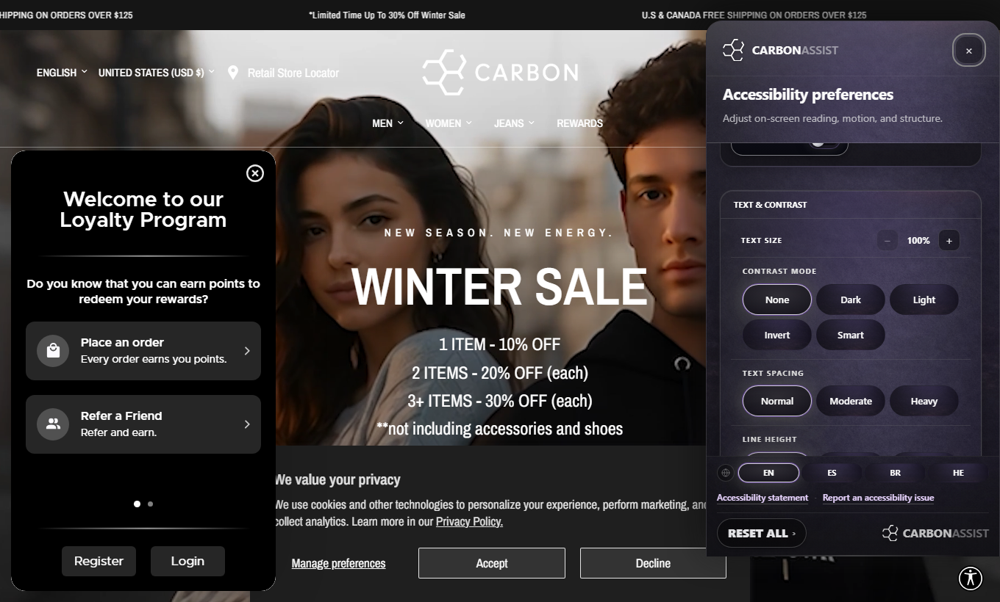
Desktop: Contrast — dark — Radio activated
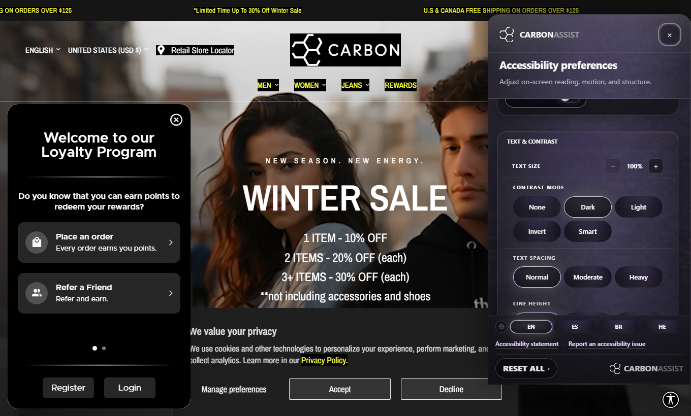
Desktop: Contrast — light — Radio activated
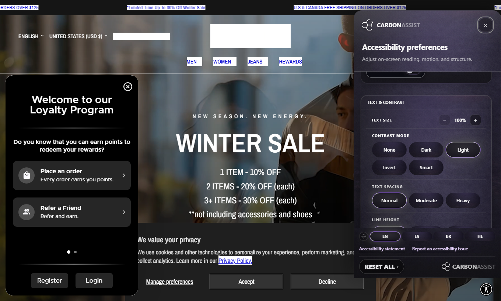
Desktop: Contrast — invert — Radio activated
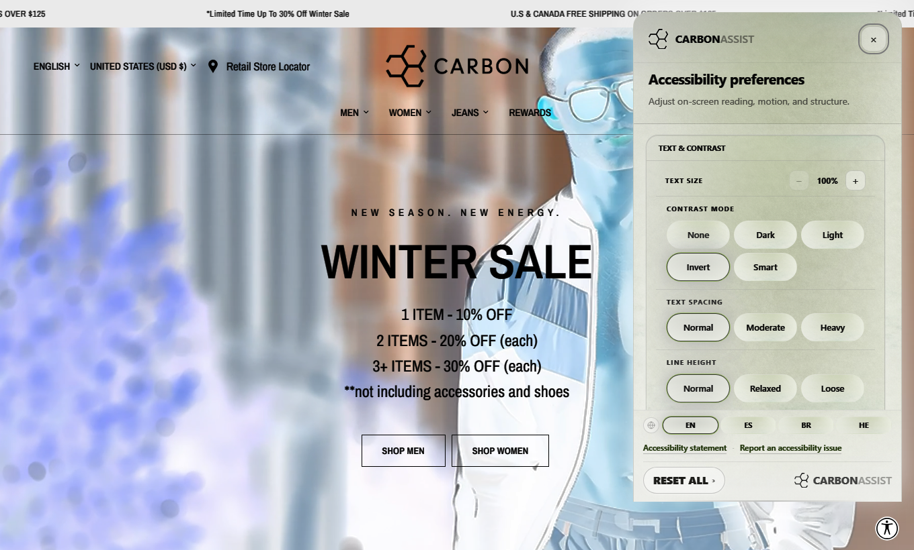
Desktop: Contrast — smart — Radio activated
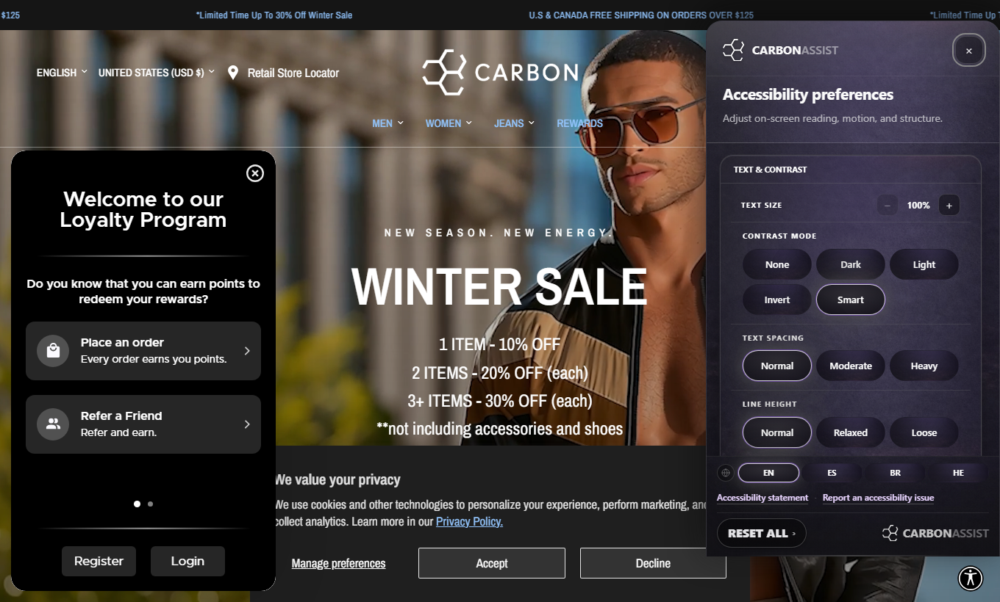
Desktop: Contrast reset (none) — Back to none
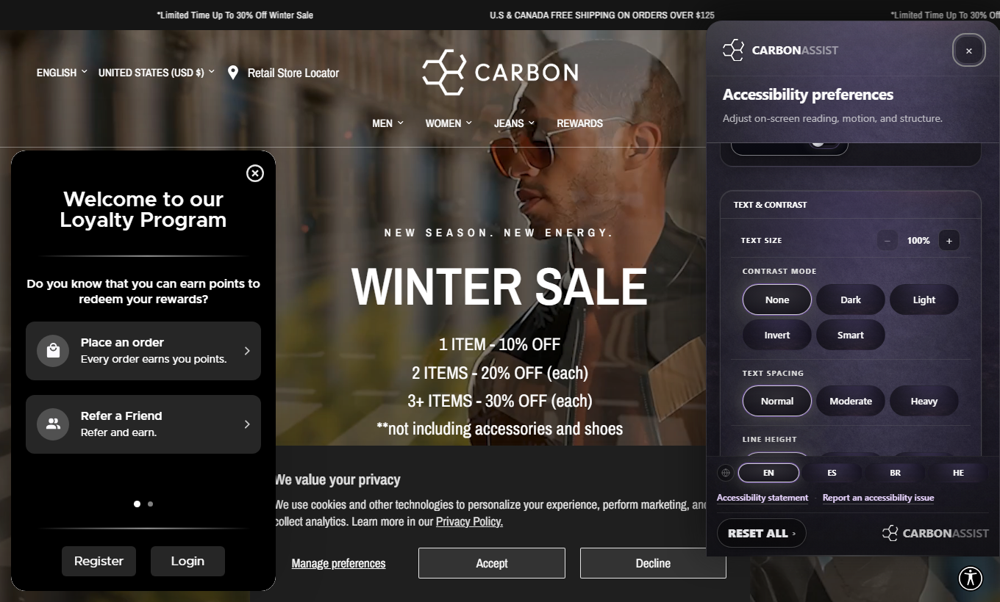